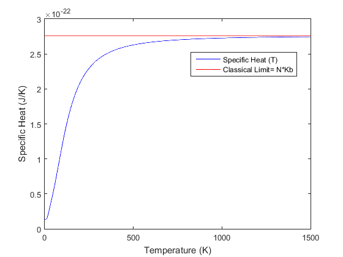
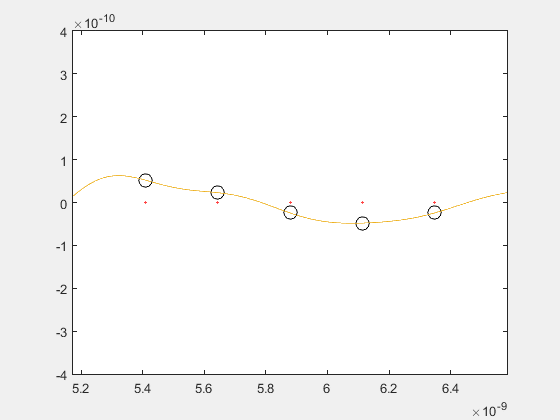
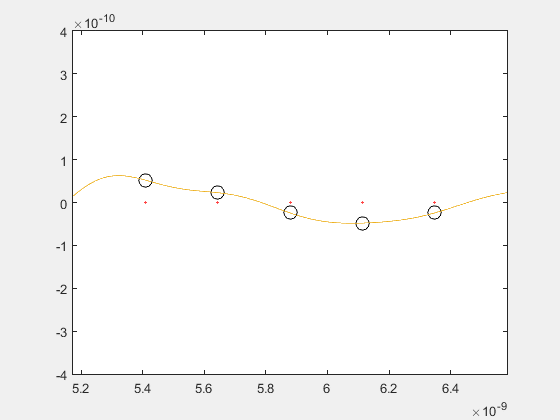
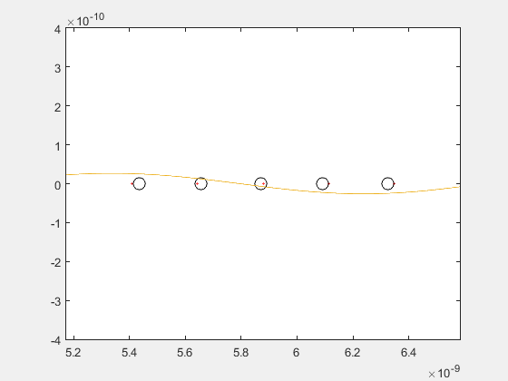
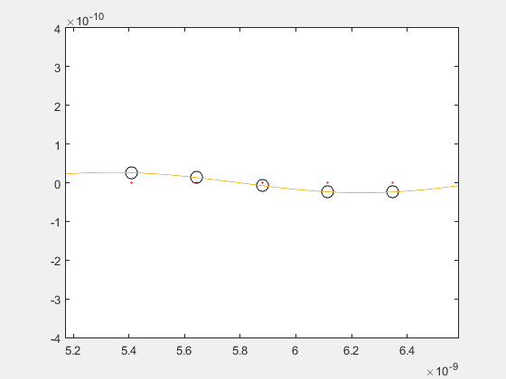
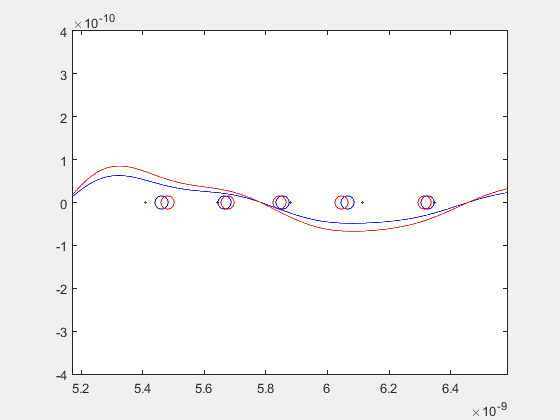
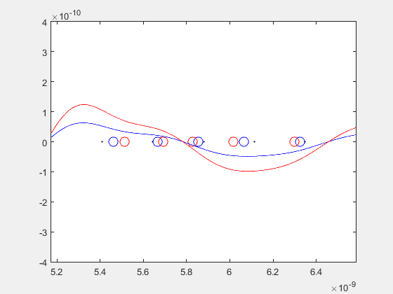

Alexandre Justo
Pablo Navarro
José Javier Ruiz
Nicolás Sibuet
Quantum Mechanics tells us that waves are particles. For example: in Electromagnetism, electromagnetic waves are associated with photons. Analogously, in Solid State, sound waves are associated with phonons. What we want to do is to simulate a chain of phonons in a solid material, and see what happens depending on at what temperature the system is.
As when treating with a photon, the energy of a phonon is \( E=\hbar w \) , and its momentum is \(P=\hbar k\) .
Roughly speaking, the temperature measures how widely the particles are moving in a system. The higher the temperature of a system, the wider its particles move. It’s important to take into account that from now on we are using a new variable as a function of the temperature: \[\beta={1 \over K_{B} T }\]
In a solid, there are many different sound waves, with different wavelengths and frequencies. The simplest case is to consider a fixed value for the frequency. This is what Einstein considered in his model, which was improved a few years later by Debye.
The number of phonons is not a fixed value. If an atom starts to oscillate, then some phonons are created. If the oscillations stop, then the phonons disappear. We cannot determine the exact number of phonons in a solid. However, what we can do is to use Statistical Physics in order to find the average phonon number which depends on temperature T and the frequency of the phonons w. \[n = {1 \over e^{\beta \hbar w} - 1}\]
We are going to consider a one-dimensional model where the atoms are connected by springs. Or, what is the same, a periodical chain of atoms with N atoms in a period. We want to solve for the frequencies of waves on our N-body one-dimensional system, in order to see how these atoms oscillate. One way of doing that is by simply considering classical equations of motion. The spring constant is K, the mass of an atom is m, the position of the nth particle is xn and the equilibrium and the separation of the particles is a. A particle’s displacement from its equilibrium position Rn is: \[u_{n} = x_{n} - R_{n} \]
The force on particle 2 due to its spring connection with particle 1 is: \[F_{21} = -K(x_{2}-x_{1}-a) \]
Note that, at equilibrium (that is, when x2 − x1 = a), the particle 1 makes zero force on particle 2.
We can rewrite this equation in terms of the u’s, and we get \[F_{21} = -K(x_{2}-R_{2}-x_{1}+R_{1}+R_{2}-R_{1}-a) = -K(u_{2}-u_{1}) \]
The classical equation of motion for particle 2 follows this differential equation \[m \frac{d^2 x_{2}}{dt^2} = F_{21} + F_{23} \]
Which, using the fact that \( \frac{d^2 x_{2}}{dt^2} = \frac{d^2 u_{2}}{dt^2}\) , can be rearranged as \[m \frac{d^2 u_{2}}{dt^2} = -K(u_{2}-u_{1}) - K(u_{2}-u_{3}) \]
There is nothing special about particle 2 or any particle in the system when periodic boundary conditions are used. So, in general, the equation for the nth particle is just this one \[m \frac{d^2 u_{n}}{dt^2} = -K(u_{2}-u_{1}) - K(u_{2}-u_{3}) \]
We expect longitudinal waves to propagate on this chain. We can look for traveling-wave solutions having the form \[u_{n} = A e^{ikR_{n}}e^{-iwt}\]
Where k is the wave number and A is the amplitude. Using the fact that \(R_{n}=na\) , if we plug this expression for \(u_{n}\) into the differential equation, the result is \[ -w^{2}mAe^{ikna}e^{-iwt}=-KA(e^{ikna}-e^{ik(n-1)a})e^{-iwt} + KA(e^{ik(n+1)a}-e^{ikna})e^{-iwt}\]
Dividing out \(-Ae^{ikna}e^{-iwt}\) gives an improved expression \[w^{2}m=K(1-e^{-ika})+K(1-e^{ika})\]
\[w^{2}m=K(2-2 \cos ka)\]
Using the trigonometric identity \[(\sin \frac {x}{2})^{2} = \frac{1}{2}(1 - \cos x)\] Then the expression gets simplified \[w^{2}m=2K(2(\sin \frac {ka}{2})^{2})\] And finally we get an expression for the frequency w, which turns out to be \[w=2\sqrt{\frac{K}{m}}|\sin \frac{ka}{2}|\]
Where we have considered only the positive determination of the square root because a frequency is defined to be positive.
Before getting to this expression for the dispersion relationship, we had made some assumptions. First of all, that all atoms in the solid have the same mass, m, which means that this expression is only valid for monoparticular chains, made up by particles of the same mass. Besides, that all springs have the same elastic constant K, and that a is also a constant which measures the separation between two atoms when they are located in their equilibrium positions (no matter which two atoms because the equilibrium separation is assumed to be the same everywhere). Although it doesn’t appear in this frequency formula, we should remind that the amplitude of oscillation A was considered to be the same for every particle. Otherwise, we wouldn’t have arrived to this wonderful expression.
Therefore, we are considering a model where K, m and a are characteristic parameters of each solid. For a certain solid, this parameters are constant numbers and they remain invariant along all the chain.
What is not such clear is the role that little k plays in this formula. So we guess it’s time to impose periodic boundary conditions and figure out.
Because the chain is periodical with N atoms in each period, it is straightforward that \[ u_{0}=u_{n}\]
Since at the left of the particle 1 we find particle N.
From this condition, we have that\[Ae^{-iwt}=Ae^{ikNa}e^{-iwt}\] Which implies the following relation \[e^{ikNa}=1\]
Since N and a are fixed values, k must fulfil some conditions in order for this chain to be periodical.
Therefore, kNa must be multiple of 2π, which leads to the restriction: \[k= \frac{2 \pi}{Na} p\]
Being p a whole number \[p= 0,\pm 1,\pm 2,\pm 3, ...\]
This result becomes important because it turns out that wavenumbers and, consequently, frequencies are given by discretized values.
Could p be any whole number? In fact, it could, but it’s unnecessary to consider such. Due to the fact that we have periodicity in the dispersion relation and that we are in the First Brillouin Zone, it’s enough to take into account those values of p which are enclosed into that zone. That’s to say, considering that N is even, the first number must be \(-N \over 2\) and the last number must be \(\frac{N}{2} - 1\). Thus, ω starts at its maximum, and it goes through all its possible values until it almost reaches the maximum again. With this series of numbers it is enough to describe all the physics of a solid. If we kept adding numbers to this series, then the same values already obtained would come out periodically. Finally, we have that \[p= -\frac{N}{2} , -\frac{N}{2} +1, ..., -1, 0, 1, ..., \frac{N}{2}-2, \frac{N}{2}-1\]
Recall that the average number of phonons is deduced by means of Statistical Physics and is given by \[n = {1 \over e^{\beta \hbar w} - 1}\]
Which is an expression that depends on the temperature of the solid and frequency of the mode. Each sound wave (with a different ω each one) will have a number of phonons associated.
One phonon has energy \(E= \hbar w\), so the average energy carried by these sound waves is \[E = n\hbar w\]
That is \[E = {\hbar w \over e^{\beta \hbar w} - 1}\]
However, we should add the energy from the fundamental state, which is due to the Uncertainty Principle. We are referring to \[ E_{0} = \frac{\hbar w} {2} \]
We sum up and we obtain the final value for the mean energy, which rings a bell with the mean energy of a quantum oscillator, whose possible values of energy are: \[ E = \hbar w (n + \frac{1}{2})\]
Here it is the final expression for the mean energy \[E = \hbar w( \frac{1}{e^{\beta \hbar w} - 1} + \frac{1}{2})\]
This expression, of course, depends on the temperature. The higher the temperature, the higher the energy; the lower the temperature, the lower the energy. In fact, in the limit when T tends towards zero (β tends towards infinity), the mean energy tends towards the ground state energy.
It also depends on the frequency w, which depends on the wave number k, which depends on p. This means that, depending on what number of p you choose, you will have one value for the wavenumber, therefore a value for the frequency, therefore a value for the energy. We will need to interpret this when we want to somehow combine normal modes.
An interesting case appears to be when \( w = 0\). The value of the energy in this case appears to be an indeterminacy of the type zero times infinity. If we work out the limit, then we arrive \[E(w=0) = \frac{1}{\beta} \]
From now on, what we have to consider is another way of finding the energy, which is the following one. We are going to consider the classical energy of a simple harmonic oscillator.\[ E = \frac{1}{2}KA^{2}\]
Where K is the spring constant (which is completely different from the wavenumber k) and A is the amplitude of oscillation.
We can rearrange that expression in order to find the amplitude related with each frequency. \[|A| = \sqrt{\frac{2 E}{K}}\]
Now, plugging the mean energy expression into the amplitude, we obtain a dependence on the frequency and the temperature \[|A(w(k),\beta(T))|= \sqrt{\frac{2 \hbar w (\frac{1}{e^{\beta \hbar w}-1}+\frac{1}{2})}{K}}\]
Recall the expression for the frequency w(k) \[w(k)=2\sqrt{\frac{K}{m}}|\sin{\frac{ka}{2}}|\]
Where the wavenumber k is given by \[ k = \frac{2 \pi}{Na}p\] \[p= -\frac{N}{2} , -\frac{N}{2} +1, ..., -1, 0, 1, ..., \frac{N}{2}-2, \frac{N}{2}-1\]
With all this expressions, we can now determine precisely the movement of atoms in a monoatomic chain. It’s matter of knowing how to combine the different modes of oscillation.
We have already computed the mean energy of a wave (or mode) with a fixed frequency and temperature, which is the energy from the fundamental state plus the energy of each fonon (\(\hbar w\)) times the average number of them (Bose’s factor). Nevertheless, the movement of atoms is a linear combination of the normal modes that we have obtained. Recall that we have obtained N modes of oscillation (one for each p) and each one with a characteristic frequency. Then, the total mean energy is the sum of the mean energy of each mode that contributes to the movement. That is: \[E=\sum_k {\hbar w( \frac{1}{e^{\beta \hbar w} - 1} + \frac{1}{2})}\]
We must take into account that when k is equal to zero the mean energy of this mode is \[\frac{1}{\beta} = K_{B} T\]
Now that we have the expression of the total mean energy, we are able to compute the specific heat: \[C(T)=\frac{dE}{dT}=\sum_k {\hbar w \frac{d}{dT} ( \frac{1}{e^{\beta \hbar w} - 1} + \frac{1}{2} ) } = \sum_k {\frac{\hbar^2 w^2}{4 K_{B} T^2 sinh^2(\frac{\hbar w}{2 K_{B} T})}}\]
Or directly, in terms of p and using \(w_{0}=\sqrt{\frac{K}{m}}\): \[C(T)= \sum_p {\frac{\hbar^2 w_o^2 |sin^2(\frac{\pi p}{N})|}{ K_{B} T^{2} sinh^{2}(\frac{\hbar w_o |sin(\frac{\pi p}{N})|}{K_{B} T})}}\]
And another time, we have to be careful with the mode \(p=0\), due to the fact that we have an indeterminacy. When we do the limit it turns out that its contribution to the specific heat is \(K_{B}\).
We have coded a program that plots the specific heat for a 1-dimensional chain of 50 silicon atoms, at temperatures from 0 to 1500K, resulting in the graph below:

The Bose occupation factor gives us the average number of phonons for a given ω (or k). As we have already seen, it is given by: \[n = {1 \over e^{\beta \hbar w} - 1}\] Now we plot the Bose occupation factor for each k abaliable in a monoatomic chain of 50 atoms at T=100K and T=500K:
As we can see, n grows rapidly as k tends to 0, and also grows for a bigger temperature.
Using Matlab, we have developed a program that will simulate the movement of some of the atoms in a monoatomic chain.
In this case, we have entered values of mass, lattice parameter and elastic constant corresponding those of a silicon chain. We will be representing the 6 atoms in the middle of a 50 atoms chain, at a temperature of 20ºC. In this first case we combine every normal mode once (as it’s a 50 atoms chain we will have 50 different normal modes).
The image at the left hand side represents the movement of the atoms in a longitudinal way (as it really is). There, the black circles represent each atom, while red dots represent their equilibrium position. We also represent the waveform that gives us the position variation for the atoms (this difference in position is represented in vertical).
To ensure that the atoms really follow the waveform displayed, we have also represented the atoms’ movement in vertical. We do this in the right hand side image.
 

For this next case we are not representing every normal mode, but only those that have a considerable Bose occupation factor (which, as we have previously observed, are those around ω = 0).


Finally, we wanted to check how changing the temperature variable affects the atoms’ movement. Effectively, as it seems logic by our calculations, the only thing that changes is the amplitude of the movement produced by every normal mode ( bigger for higher temperatures).
The first example compares T=295K (blue) to T=595K (red), the second one compares T=295K (blue) to T=1295K (red).


The three different codes used for the simulations are listed and linked below:
We also show the codes for the Bose occupation factor calculator and the specific heat calculator using their respective links. Their Matlab .m files are also included in the folder.